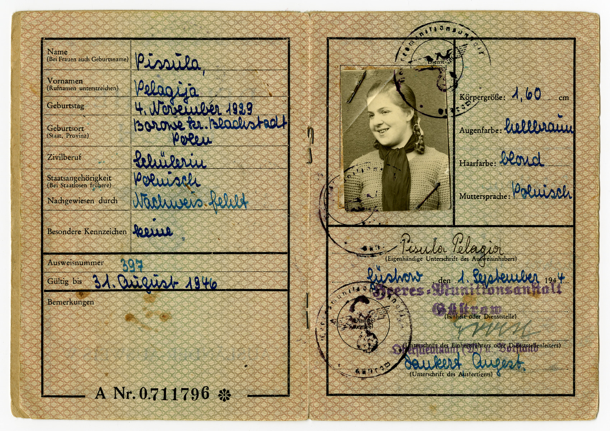
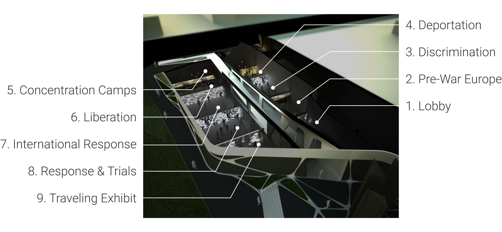

SUMMARY
The Los Angeles Museum of the Holocaust is the
oldest Holocaust museum in the nation, founded in 1978. The Museum’s
audioguides won the 2011 gold MUSE award from the American
Association of Museums. I was involved in two separate roles.
First, I was a Bearing Witness Volunteer, in which I interviewed
two Holocaust survivors in LA and created an Audioguide Tour
based on their stories. Second, I was a Getty Multicultural
Education Intern, in which I created the Shanghai Ghetto Tours
and led them for museum visitors.
BEARING WITNESS VOLUNTEER
RESEARCH
I worked with a larger team to interview two sisters: Pola Spitzer
and Genia Bardach, both of whom grew up in Poland prior to the
Holocaust and currently live in Los Angeles. We met with them every
other week to take notes and
compiled a transcript based on their eyewitness testimony.
We also went to the LA Museum of the Holocaust and listened to the archives at the
Tree of Testimony, which detailed survivors’ stories in video form.
Both Pola and Genia told their stories through that program, so we
took notes about their experiences shared through the older
interview.

MUSEUM
The museum layout is made in chronological order, where visitors
start by looking at artifacts teaching them about
antisemitism that preceded the Holocaust and end by looking at
exhibits focusing on post-World War II. There are nine sections in the
museum, as seen in the following:

Our task was to make sure the audioguide matched the layout and
corresponded with the respective period. For instance, the Audioguide Tour
narrative
was to be split into nine segments to match the nine sections, and
each segment will match the theme of the particular section in the
museum. We also had to research how the museum organizes the
artifacts and exhibits, so that we can create a more comprehensive
Audioguide Tour.
TRANSCRIPT
After collecting the data from our research, we wrote a transcript
detailing the information we will be covering in the Audioguide
Tour. It was reviewed by Dr. Todd Presner of UCLA, a professor and
subject matter expert leading the Bearing Witness program.
FINAL PRODUCT
After making sure that the chronological order of their story
matched with the order of the museum, We assigned each person in the team to
a section of the Audioguide Tour to narrate. We recorded it
using Audacity before piecing it together into a single sound file.
VIEW TRANSCRIPT
GETTY MULTICULTURAL EDUCATION INTERN
RESEARCH
I made the Focus Tour based on the
Charles Millet | Karl Sinai collection,
which contains documentation of Karl Sinai’s family
when they were detained in the Shanghai Ghettos.
For the tour, I researched the collection and how it fits in with the
history of the Holocaust. Like with the Audioguide Tour, I based
the structure of the In-person Tour on the museum layout.
I also consulted with the museum archivist to
understand the history behind the papers so that I could create a
more effective tour.
TRANSCRIPT
After collecting the data from my research, I wrote a transcript
detailing the information I will cover in the Shanghai Ghettos Tour.
It was reviewed by the Education Programs Manager
at the museum.
FINAL PRODUCT
When the transcript was approved, I memorized it and led a tour
every day for the museum. A copy of the transcript is included in
the following link:
VIEW TRANSCRIPT